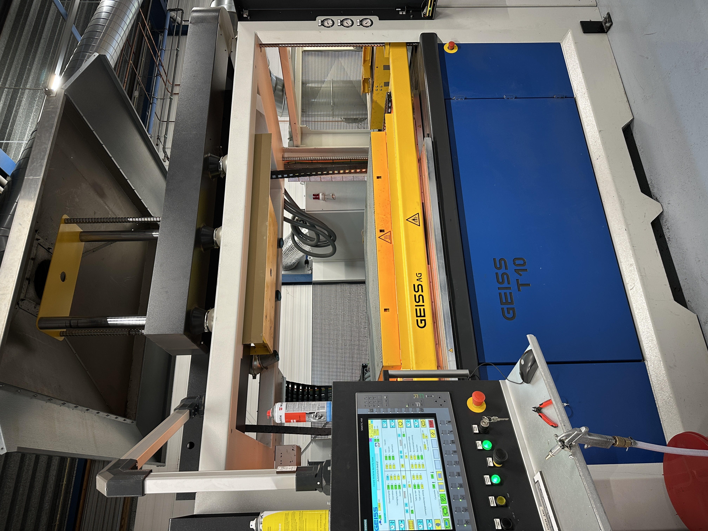

In de eerste weken van de minor kregen we een ESP32 in handen en werkten we met een handleiding van RobotExchange.io. Hoewel ik vanuit mijn studie al bekend was met microcontrollers, vond ik het toch nuttig om alles stap voor stap te doorlopen. Zo kon ik controleren of elk onderdeel naar behoren functioneerde en kreeg ik direct gevoel bij de mogelijkheden van de ESP32. Het device bleek verrassend krachtig en flexibel, wat al snel van pas kwam bij de daaropvolgende opdrachten.
In de eerste weken van de minor kregen we een ESP32 in handen en werkten we met een handleiding van RobotExchange.io. Hoewel ik vanuit mijn studie al bekend was met microcontrollers, vond ik het toch nuttig om alles stap voor stap te doorlopen. Zo kon ik controleren of elk onderdeel naar behoren functioneerde en kreeg ik direct gevoel bij de mogelijkheden van de ESP32. Het device bleek verrassend krachtig en flexibel, wat al snel van pas kwam bij de daaropvolgende opdrachten.
Onze eerste uitdaging was het aansluiten en uitlezen van een LDR (Light Dependent Resistor). Deze waarde stuurde ik vervolgens via de ESP32 naar mijn computer, zodat ik precies kon volgen hoe de lichtintensiteit veranderde. Daarna breidde ik de opdracht uit: zodra de lichtwaarde onder een bepaalde grens dook, ging de ingebouwde LED branden.
In een andere les hebben we alle onderdelen die in de eindopdracht nodig waren, één voor één doorgelicht. We sloten ze aan op de ESP32 en draaiden vervolgens kleine stukjes code die specifiek voor elk onderdeel waren geschreven. Zo konden we meteen zien of alles werkte zoals verwacht, en bovendien leerden we hoe de verschillende sensoren en modules in elkaar steken. Voor mij ging dit soepel, omdat ik al ervaring had met soortgelijke componenten. Daardoor kon ik mijn medestudenten helpen door problemen te troubleshoot’en en samen te kijken naar mogelijke oplossingen.
Voor de IoT-oplossing kregen we de opdracht om een PCB te ontwerpen waarop alle benodigde componenten een plek zouden krijgen. Omdat ik in mijn studie al vaker met PCB-ontwerp te maken had gehad, was dit niet helemaal nieuw voor mij. Het vormgeven en positioneren van de headers, weerstanden en andere componenten in de ontwerptool ging dan ook vrij soepel. Uiteindelijk heb ik thuis de headers op de PCB gesoldeerd, zodat alles klaar was voor de eindassemblage.
We begonnen dit onderdeel met een algemene uitleg over additive manufacturing. Vervolgens doken we in SolidWorks om 3D-modelleren onder de knie te krijgen. Voor mij was dit behoorlijk uitdagend, omdat ik nog nooit eerder in 3D had ontworpen. Door de tutorials te volgen en veel te oefenen, bereikte ik uiteindelijk een basisniveau waarmee ik zelfstandig objecten kon creëren.
Samen met mijn projectgroep kreeg ik daarnaast de opdracht om een specifieke 3D-printtechniek te onderzoeken en te presenteren. Wij kozen voor binder jetting. Bij deze methode wordt er laag voor laag een poederbed aangebracht, waarna een bindmiddel (een soort lijm) selectief wordt toegevoegd. Zo ontstaan vaste patronen in het poeder. Na elke laag zakt het bouwplatform iets omlaag, wordt er weer poeder aangebracht en opnieuw bindmiddel toegevoegd. Uiteindelijk heb je een ‘ruw’ geprint object dat je uit het poederbed haalt. Vaak moet je het daarna nog nabehandelen of sinteren (verhitten) om het product zijn definitieve vorm en sterkte te geven. Het bijzondere aan deze techniek is dat je relatief snel complexe onderdelen kunt maken, zonder veel steunmateriaal nodig te hebben.
In de daaropvolgende lessen lag de focus volledig op het modelleren van de IoT-behuizing in SolidWorks. We importeerden eerst alle benodigde componenten en plaatsten deze als een assembly. Zo konden we precies zien waar sensoren, kabels en andere onderdelen zouden komen. Daarna ontwierpen we de behuizing eromheen. Aangezien ik nog niet veel ervaring had, koos ik voor een simpel ontwerp. Wel experimenteerde ik met chamfers om randen netjes af te werken en voegde ik enkele mounting bosses toe om onderdelen te kunnen vastschroeven. Ook maakte ik uitsparingen voor de sensoren en kabels, zodat ze goed bereikbaar zouden zijn.
Door deze aanpak lukte het me om een functioneel ontwerp te maken, ondanks mijn beperkte ervaring met 3D-modelleren. Deze lessen hebben me laten inzien dat je al met een paar basisvaardigheden in SolidWorks snel een bruikbaar prototype kunt ontwikkelen—zeker wanneer je ook de 3D-printer tot je beschikking hebt om het resultaat meteen in de praktijk te testen.
Tijdens de lessen Additive Manufacturing leerden we over de impact van 3D-printen. Door middel van dit proces kunnen complexe vormen worden gecreëerd die met traditionele methoden moeilijk of niet haalbaar zijn. Dit maakt het een flexibele en vaak kostenbesparende manier van produceren. Een specifiek voordeel is de mogelijkheid om snel prototypes te itereren zonder dure mallen te hoeven maken.
